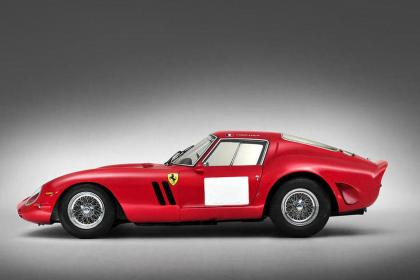
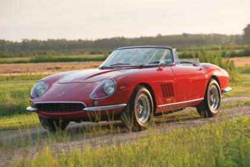
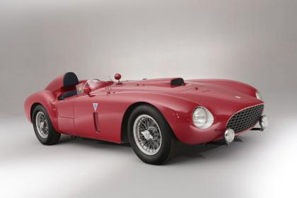
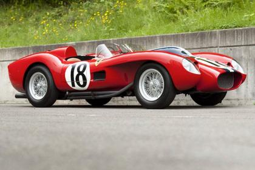
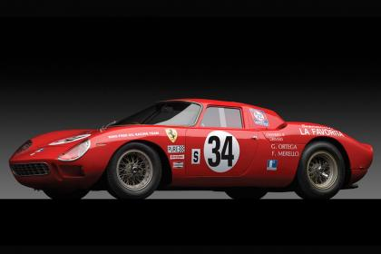

5 siêu xe Ferrari đồ cổ đẹp nhất
Ferrari thường sản xuất những mẫu xe bản đặc biệt với số lượng giới hạn, giá đắt đỏ nhằm kỷ niệm kỷ nguyên siêu xe của mình, hoặc tri ân các khách hàng thân thiết của hãng.
1. Ferrari 250 GTO đời 1962
Nơi bán: Bonhams The Quail 2014
Giá bán: 38.115.000 USD
Ferrari 250 GTO Berlinetta đời 1962 là chiếc xe đắt nhất từng được bán tại một phòng bán đấu giá, tính tới thời điểm hiện tại. Đây là chiếc xe được sản xuất để tham dự Giải vô địch GT thế giới năm 1963 (1963 FIA World GT Championships) và giành chiến thắng tại giải này cũng như tại sự kiện được tổ chức năm sau. Chỉ có duy nhất 39 xe được sản xuất và đây là một trong những xe còn được giữ gìn nguyên vẹn và có bề dày thành tích nhất với dòng xe này.

2. Ferrari 275 GTB/4*S NART Spider đời 1967
Nơi bán: RM Auctions Monterey Sale 2013
Giá bán: 27.500.000 USD
Chiếc Ferrari 275 GTB/4 NART Spider có giá bán kỷ lục này là 1 trong 10 chiếc duy nhất còn lại của dòng xe này trên thế giới. Đây là chiếc xe đã xuất hiện cùng Steve McQueen trong tác phẩm điện ảnh The Thomas Crown Affair.NART Spiders là con đẻ của nhà nhập khẩu xe hơi Luigi Chinetti, người nắm bắt được thị hiếu của thị trường Mỹ đối với dòng xe thể thao mui trần.

3. Ferrari 375-Plus Spider Competizione đời 1954
Nơi bán: Bonham, Goodwood Festival of Speed 2014
Giá bán: 18.400.117 USD
Ferrari 375-Plus Spider Competizione được sản xuất thuần túy cho đội đua của Ferrari với động cơ V12 dung tích 4.9 lít được gắn ở trục bánh trước. Tại giải đua Mille Miglia năm 1954, chiếc xe này giành vị trí á quân cùng tay đua Umberto Maglioli. Khi được bán đấu giá tại Goodwood Festival of Speed năm nay, Ferrari 375-Plus Spider Competizione được trả giá 18 triệu 400 nghìn đô la Mỹ.

4. Ferrari 250 Testarossa đời 1957
Nơi bán: Gooding & Company Pebble Beach 2011
Giá: 16.390.000 USD
Chiếc Ferrari 250 Testarossa đầu tiên sản xuất được bán đấu giá 16 triệu 390 nghìn đô la Mỹ tại Pebbe Beach vào năm 2011. Chiếc xe có lịch sử vinh quang trong giới motorsport khi đem bán đấu giá đã được phục chế hoàn toàn, xe sử dụng động cơ V12 dung tích 3.0 lit có công suất 300bhp và được sơn màu đen lạ mắt.

5. Ferrari 250 LM đời 1964
Nơi bán: RM Auctions New York Sale, 2013
Giá bán: 14.300.000 USD
Ferrari 250 LM được bán với giá 14 triệu 300 nghìn đô la Mỹ vào năm 2013. Đây là một trong những mẫu xe đầu tiên của Ferrari có thiết kế động cơ đặt ở giữa xe (mid-engined car) hiện vẫn còn được lưu giữ và là chiếc thứ 24 trong số 32 xe được sản xuất. Chiếc xe kết thúc giải đấu Daytona 24 giờ vào năm 1968 với vị trí thứ 8 chung cuộc và vị trí số 1 cho các xe cùng loại.
